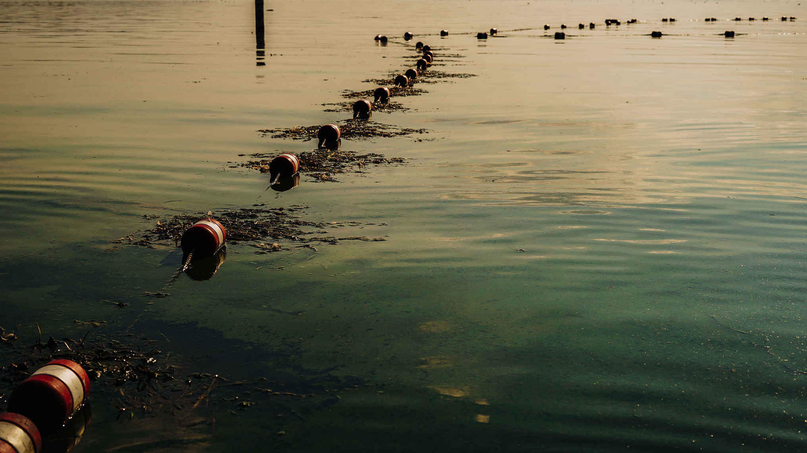
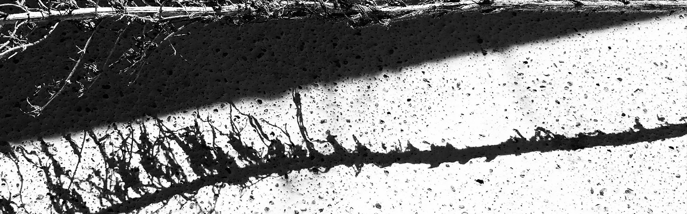
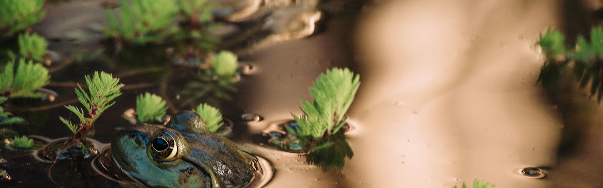

A buoy line extending into lakewater. Cate Barry.
Getting to Noticable
“Attention is the … mechanism that turns looking into seeing” (Carrasco 2011, 1484). As a physical function, attention happens in both overt and covert ways. Overt attention involves moving the eyes in order to look straight at something. Covert attention allows viewers to notice peripheral objects or movement without turning their gaze directly towards it. In short, covert attention is attention that happens when (and because) viewers don’t register that they’re seeing something. And yet, while the effects of overt attention might be most obvious—viewers register and respond to what they look at intentionally—viewers also experience the effects of covert attention all the time. They duck to avoid an object flying from the side; they jump at an unexpected peripheral presence; they guide cars around a curve or past stationary objects.
As we use it here, noticing is the rhetorical manifestation of attention—both covert and overt. The rhetorical implications of overt attention, like their physiological ones, are relatively clear and have some history of analysis (see, e.g. studies of staring or of the gaze). Covert attention has, perhaps not surprisingly, remained largely unacknowledged. Even so, covert attention has significant rhetorical implications, especially—but not exclusively—as matters move from covert to overt attention. We are particularly interested in developing theories of noticing as a rhetorical function of the visual that account for these more implicit aspects of attention.
Covert attention happens socially and culturally, in everyday environments and over long spans of time. Like physiological covert attention, this social covert attention functions outside of conscious awareness most of the time yet can suddenly and precipitously emerge into view: familiar clothing suddenly feels out of fashion, a relationship is abruptly recognizable as abusive, what were subtle aches and pains compound to limit movement. In theorizing accumulation, Christa writes, “Sediments (objects, ideas, feelings) build up within publics and within individual lives. Even when no single thing seems to spark change … they are agglutinative, sticking to us and to each other. Piling up, they become momentous” (C. Olson 2022, 45). In this sense, covert attention makes noticing a rhetorical function of normalcy and the status quo, rather the opposite of the catalytic function outlined in Chapter 2. By acknowledging the work of covert attention, noticing registers what viewers take in and accept as normal, what we don’t notice, and what we notice but don’t deem worthy of comment. As it pervades daily life—influencing without rising to the level of conscious persuasion—covert attention is a major driver of what is noticeable, even when it, itself, is not noticed. Through covert attention, noticing (and not-noticing) become one the most prolific, common, and consequential rhetorical functions of the visual not despite but because the objects of covert attention so often aren’t registered as important.
Fern branch in the sun. Cate Barry.
At the opposite end of the visual spectrum from the starving polar bear whose lumbering steps drew billions of viewers lies the flat pigtoe, a freshwater mussel from the southeastern United States that was “identified in the wild only a few times and never seen again” (Brown 2021). It was slated to be declared extinct in late 2021 and the news reports announcing its fate were likely the first and last that most people heard of it. “By the time they got a name,” one article on the decision comments, “they were fading from existence.” The biologists who seek (but don’t find) that multitude of beings caught in the wave of mass extinction are paying overt attention, of course, but for the rest of us, missing mussels probably aren’t even in our metaphorical (let alone literal) peripheral vision. However, the story of the flat pigtoe’s (lack of) noticeability and the ways that neither its presence nor its absence shifted widely-held perceptions of normalcy has a great deal to tell us about how noticing works to sustain and (slowly, imperceptibly) shift the status quo. It also illuminates how rhetoricians’ failure to notice noticing hamstrings our understanding of climate change rhetorics.
The classical frameworks of rhetorical importance are profoundly humanist. They index what matters based on a human scale and fail to engage relationally and on interspecies terms. Post-human and cultural rhetorics scholarship has made this point repeatedly and effectively. Those same Western, humanist frameworks are also deeply seated in hegemonic public consciousness, showing up as a preference for compelling human interest that is easily exemplified by the wide dispersion of Mittermeier and Nicklen’s polar bear video. It is easy for rhetoricians to recognize such hegemonic preference for spectacular magnitude and allow it to shape our understandings of how rhetoric works (i.e. that it largely functions through moments of grand import). However, although white, Western, settler psyches do tend to be particularly invested in magnitude and most readily persuaded by appeals to self-interest, consistently centering magnitude and instances of overt attention merely contributes to the disaster of the anthropocene. It ignores both subtler forms of influence and creates hierarchies of rhetorical importance that privilege Western and hegemonic frameworks for what is made to matter.
The National Geographic image of the starving polar bear undoubtedly captured collective attention in the United States among those already concerned with climate change. It sought to help some audiences understand the future of climate change by imagining extinction before it occurs. As we note above, such strategies have already been roundly critiqued in terms of their effectiveness for combating climate change and catalyzing meaningful political action. Our interest in the shortcomings of the polar bear video, however, has little to do with whether such images are effective. Instead, we ask what visual rhetoric loses when it directs its attention primarily to what is already noticeable to those who are positioned to make noticing matter in the halls of power.

Black and white shadow of branch on stucco. Cate Barry.
Every act of noticing involves a concomitant opacity. As Christa writes elsewhere about “discovery”—one of the ur practices of overt ‘noticing’—“for something to be claimed as a discovery, other possible understandings of that thing must be covered over, obscured” (C. Olson 2022, 137-38). “Revelation,” she explains, “also hides” (137). This point, too, has physiological and rhetorical roots. Psychologists have written extensively about what they term “inattentional blindness,” or the fact that viewers—when intently focused on one visual task—will fail to notice that which is right in front of them. "Research,” writes Mack, “conclusively demonstrates that, with rare exceptions, observers generally do not see what they are looking directly at when they are attending to something else" (181). Viewers are constantly judging what is relevant, and “attention can serve as a filter for [what they deem to be] irrelevant information,” meaning that “items that do not receive attention typically do not reach awareness” even if they are alarming or distinctive.
This phenomenon of inattentional blindness and failure to notice haunts Western visual and discursive approaches to climate change. It is often the very frameworks that would be best equipped to address climate collapse that are obscured when keystone species and ecological disasters take center stage. Zoe Todd writes, “It is easier for Euro-Western people to tangle with a symbolic polar bear on a Greenpeace website or in a tweet than it is to acknowledge arctic Indigenous peoples and their knowledge systems and legal-political realities” (2016, 6). Those knowledge systems and legal-political realities have been there all along. They have not needed to be noticed by Western scientists or political structures in order to exist, matter, and do persuasive work. Indeed, as the dodo and the carrier pigeon could once have attested, earning Western overt attention can be fatal. And yet, rhetoricians need to, um, notice, how much the things that we already deem to be important affect what we notice—both as everyday viewers of climate change and as analysts. There are rhetorical consequences to our processes of covert and overt attention and our tendencies toward inattentional blindness. Those consequences can be amplified when cultural, individual, and learned ways of noticing themselves go unnoticed.

Frog in grassy water. Cate Barry.
And so, we return to the flat pigtoe, the southern acornshell, the stirrupshell, the tubercled-blossom pearly mussel, the turgid-blossom pearly mussel, the upland combshell, the yellow-blossom pearly mussel, and the green-blossom pearly mussel—all freshwater beings slated to be removed from the US Fish and Wildlife Service’s endangered species list due to presumed extinction. We turn toward the po’ouli, a miniscule bird native to Hawaii that was “discovered” in 1973 and last seen in 2004. And we point to the harm it does to link noticing and mattering so tightly. If a species (or an issue) must be overtly (or even covertly) noticeable [to humans] in order to matter, we lock ourselves into a human-centric world. And that world is made all the more rhetorically dangerous—for endangered human and non-human animals alike—given that human noticing is so often deadly. The “discovery” of the po’ouli or the flat pigtoe may not have drawn violence to them, but the whole framework of discovery (its ‘doctrine,’ we might say) has a rhetorical function in Western colonial history that leads quickly from noticing to exploitation and from exploitation to destruction. If rhetoricians are to take on noticing as an important rhetorical function of the visual, we must do without fetishizing that which is noticed. We must recognize that both covert and overt attention are forms of noticing and that both simultaneously obscure.
In other words, even as we ask rhetoricians to recognize noticing as a powerful rhetorical function of the visual—one that “makes things matter” (Farrell 2008) and that is crucial in determining that to which people will say yes (Foucault 1978)—we simultaneously urge attention to that which is unnoticed, to inattentional blindness as, also, part of the rhetorical function of noticing. Many things that are not noticeable to those in power or even to humans in general, matter. We cannot speak to the rhetorics of that separate-from-human mattering, and we recognize that the verb “making” is crucial to Farrell’s definition (that rhetoric may reside more in the “art of making” than in the sheer fact of mattering), yet we find it important to confirm that noticing, mattering, and rhetorical consequence are, and always will be, distinct from one another. Any effort to “make things [including climate change] matter” has to grapple with that more-than-human reality.